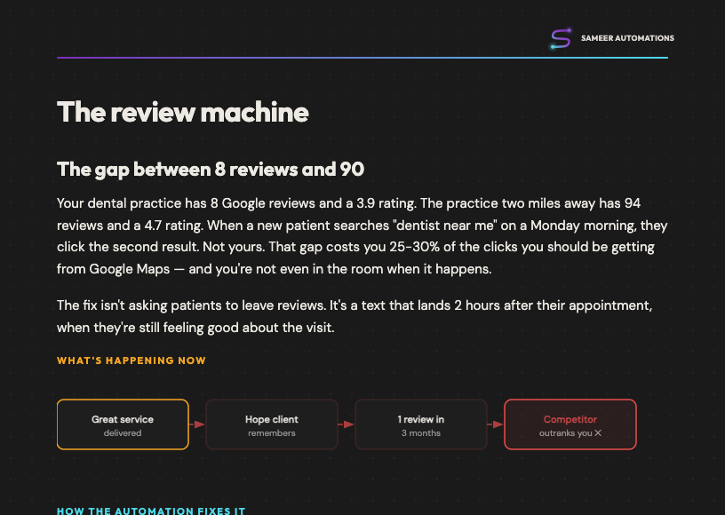

Free guide — Dental practice automation
The review machine
Your dental practice has 8 Google reviews and a 3.9 rating. The practice two miles away has 94 reviews and a 4.7 rating. When a new patient searches "dentist near me" on a Monday morning, they click the second result. Not yours. That gap costs you 25-30% of the clicks you should be getting from Google Maps — and you're not even in the room when it happens.

Download free guide
PDF — 3 pages — No email required
What's inside
- → The gap between 8 reviews and 90 — and what it costs in monthly revenue
- → How a timed post-visit text gets 40% response rate (vs. 5% at the desk)
- → 6-step DIY map using Twilio + n8n — plus TCPA compliance gotcha to avoid
What's happening now
How the automation fixes it